Análisis exploratorio de datos#
import pandas as pd
import numpy as np
import matplotlib.pyplot as plt
import seaborn as sns
df = pd.read_csv("content/train.csv")
print("No. of rows: ", df.shape[0])
print("No. of columns: ", df.shape[1])
No. of rows: 1458644
No. of columns: 11
# Dividir en entrenamiento (80%) y prueba (20%)
from sklearn.model_selection import train_test_split
train_df, test_df = train_test_split(df, test_size=0.2, random_state=42)
print("No. de filas en el conjunto de entrenamiento:", train_df.shape[0])
print("No. de columnas en el conjunto de entrenamiento:", train_df.shape[1])
No. de filas en el conjunto de entrenamiento: 1166915
No. de columnas en el conjunto de entrenamiento: 11
train_df = train_df.reset_index(drop=True)
#Mantener secuencia en los indices
train_df.head()
| id | vendor_id | pickup_datetime | dropoff_datetime | passenger_count | pickup_longitude | pickup_latitude | dropoff_longitude | dropoff_latitude | store_and_fwd_flag | trip_duration | |
|---|---|---|---|---|---|---|---|---|---|---|---|
| 0 | id0458976 | 2 | 2016-06-29 18:21:02 | 2016-06-29 18:39:55 | 1 | -73.862762 | 40.768822 | -73.891701 | 40.746689 | N | 1133 |
| 1 | id0434613 | 2 | 2016-04-25 13:03:26 | 2016-04-25 13:18:13 | 1 | -73.958038 | 40.783237 | -73.975510 | 40.760853 | N | 887 |
| 2 | id3809234 | 2 | 2016-05-07 12:36:09 | 2016-05-07 12:47:35 | 1 | -73.969460 | 40.785519 | -73.989243 | 40.771748 | N | 686 |
| 3 | id1203705 | 1 | 2016-05-14 18:44:17 | 2016-05-14 18:57:55 | 1 | -73.981743 | 40.736549 | -73.998352 | 40.726440 | N | 818 |
| 4 | id1896645 | 2 | 2016-04-10 22:51:25 | 2016-04-10 23:07:16 | 1 | -73.977913 | 40.752609 | -73.975647 | 40.733139 | N | 951 |
train_df_info = df.info()
<class 'pandas.core.frame.DataFrame'>
RangeIndex: 1458644 entries, 0 to 1458643
Data columns (total 11 columns):
# Column Non-Null Count Dtype
--- ------ -------------- -----
0 id 1458644 non-null object
1 vendor_id 1458644 non-null int64
2 pickup_datetime 1458644 non-null object
3 dropoff_datetime 1458644 non-null object
4 passenger_count 1458644 non-null int64
5 pickup_longitude 1458644 non-null float64
6 pickup_latitude 1458644 non-null float64
7 dropoff_longitude 1458644 non-null float64
8 dropoff_latitude 1458644 non-null float64
9 store_and_fwd_flag 1458644 non-null object
10 trip_duration 1458644 non-null int64
dtypes: float64(4), int64(3), object(4)
memory usage: 122.4+ MB
Revisaremos las variables pickup_datetime y dropoff_datetime debido a que son de tipo object en lugar de datetime64.
# Missing values
print(train_df.isnull().sum())
id 0
vendor_id 0
pickup_datetime 0
dropoff_datetime 0
passenger_count 0
pickup_longitude 0
pickup_latitude 0
dropoff_longitude 0
dropoff_latitude 0
store_and_fwd_flag 0
trip_duration 0
dtype: int64
train_df.dtypes
id object
vendor_id int64
pickup_datetime object
dropoff_datetime object
passenger_count int64
pickup_longitude float64
pickup_latitude float64
dropoff_longitude float64
dropoff_latitude float64
store_and_fwd_flag object
trip_duration int64
dtype: object
En el paso anterior verificamos el clase de variables y podemos ver que tenemos de todo tipo, seguido de esto estaremos haciendo unas modificaciones en los tipos de variables para un mejor manejo de los datos.
# Transformando las columnas de fecha y hora (pickup y dropoff) en objetos de tipo datetime
train_df['pickup_datetime'] = pd.to_datetime(train_df['pickup_datetime'], format='%Y-%m-%d %H:%M:%S')
train_df['dropoff_datetime'] = pd.to_datetime(train_df['dropoff_datetime'], format='%Y-%m-%d %H:%M:%S')
# Transformando vendor_id y store_and_fwd_flag a tipo de dato categórico
train_df['vendor_id'] = train_df['vendor_id'].astype('category')
train_df['store_and_fwd_flag'] = train_df['store_and_fwd_flag'].astype('category')
# Convirtiendo la variable de "Sí/No" a 1 y 0 y transformándola en tipo de dato categórico
train_df['store_and_fwd_flag'] = 1 * (train_df.store_and_fwd_flag.values == 'Y')
train_df['store_and_fwd_flag'] = train_df['store_and_fwd_flag'].astype('category')
# Muestra las primeras 10 filas
print(train_df.tail())
id vendor_id pickup_datetime dropoff_datetime \
1166910 id1753868 2 2016-03-25 07:11:49 2016-03-25 07:33:10
1166911 id2204747 1 2016-02-16 18:01:45 2016-02-16 18:15:38
1166912 id3043606 2 2016-01-26 19:22:29 2016-01-26 19:43:54
1166913 id1458584 1 2016-01-19 11:53:47 2016-01-19 12:00:16
1166914 id0357025 2 2016-02-10 22:39:31 2016-02-10 23:05:41
passenger_count pickup_longitude pickup_latitude \
1166910 2 -73.955032 40.777328
1166911 1 -73.973618 40.763920
1166912 1 -74.006195 40.734283
1166913 1 -73.962341 40.767323
1166914 1 -73.874649 40.774071
dropoff_longitude dropoff_latitude store_and_fwd_flag trip_duration
1166910 -74.006203 40.749424 0 1281
1166911 -73.983849 40.749874 0 833
1166912 -73.949608 40.785282 0 1285
1166913 -73.969757 40.768669 0 389
1166914 -74.004242 40.746899 0 1570
# Calcula la duración del viaje en segundos usando las columnas de fecha y hora
train_df['check_trip_duration'] = (train_df['dropoff_datetime'] - train_df['pickup_datetime']).map(lambda x: x.total_seconds())
# Encuentra viajes donde la duración calculada difiere de la duración reportada en más de 1 segundo
duration_difference = train_df[np.abs(train_df['check_trip_duration'].values - train_df['trip_duration'].values) > 1]
# Muestra la forma (filas, columnas) del DataFrame con las diferencias
duration_difference.shape
(0, 12)
print("Startdate: ", train_df['pickup_datetime'].min())
print("Enddate: ", train_df['pickup_datetime'].max())
Startdate: 2016-01-01 00:00:17
Enddate: 2016-06-30 23:59:39
Tenemos datos en un rango de los primeros seis meses del año 2016.
# Creando nuevas características a partir de las columnas de fecha y hora
# Para la fecha y hora de recogida (pickup)
train_df['dia_recogida'] = train_df['pickup_datetime'].dt.day # Día del mes
train_df['hora_recogida'] = train_df['pickup_datetime'].dt.hour # Hora del día
train_df['dia_semana_recogida'] = train_df['pickup_datetime'].dt.weekday # Día de la semana (0: Lunes, 6: Domingo)
# Para la fecha y hora de llegada (dropoff)
train_df['dia_llegada'] = train_df['dropoff_datetime'].dt.day # Día del mes
train_df['hora_llegada'] = train_df['dropoff_datetime'].dt.hour # Hora del día
train_df['dia_semana_llegada'] = train_df['dropoff_datetime'].dt.weekday # Día de la semana (0: Lunes, 6: Domingo)
train_df.head()
| id | vendor_id | pickup_datetime | dropoff_datetime | passenger_count | pickup_longitude | pickup_latitude | dropoff_longitude | dropoff_latitude | store_and_fwd_flag | trip_duration | check_trip_duration | dia_recogida | hora_recogida | dia_semana_recogida | dia_llegada | hora_llegada | dia_semana_llegada | |
|---|---|---|---|---|---|---|---|---|---|---|---|---|---|---|---|---|---|---|
| 0 | id0458976 | 2 | 2016-06-29 18:21:02 | 2016-06-29 18:39:55 | 1 | -73.862762 | 40.768822 | -73.891701 | 40.746689 | 0 | 1133 | 1133.0 | 29 | 18 | 2 | 29 | 18 | 2 |
| 1 | id0434613 | 2 | 2016-04-25 13:03:26 | 2016-04-25 13:18:13 | 1 | -73.958038 | 40.783237 | -73.975510 | 40.760853 | 0 | 887 | 887.0 | 25 | 13 | 0 | 25 | 13 | 0 |
| 2 | id3809234 | 2 | 2016-05-07 12:36:09 | 2016-05-07 12:47:35 | 1 | -73.969460 | 40.785519 | -73.989243 | 40.771748 | 0 | 686 | 686.0 | 7 | 12 | 5 | 7 | 12 | 5 |
| 3 | id1203705 | 1 | 2016-05-14 18:44:17 | 2016-05-14 18:57:55 | 1 | -73.981743 | 40.736549 | -73.998352 | 40.726440 | 0 | 818 | 818.0 | 14 | 18 | 5 | 14 | 18 | 5 |
| 4 | id1896645 | 2 | 2016-04-10 22:51:25 | 2016-04-10 23:07:16 | 1 | -73.977913 | 40.752609 | -73.975647 | 40.733139 | 0 | 951 | 951.0 | 10 | 22 | 6 | 10 | 23 | 6 |
import matplotlib.pyplot as plt
import seaborn as sns
#Grafico 1:Viajes por día del mes.
plt.figure(figsize=(10, 5))
sns.histplot(train_df['dia_recogida'], bins=31, kde=False)
plt.xlabel('Día del mes')
plt.ylabel('Número de viajes')
plt.title('Viajes por día del mes')
plt.show()
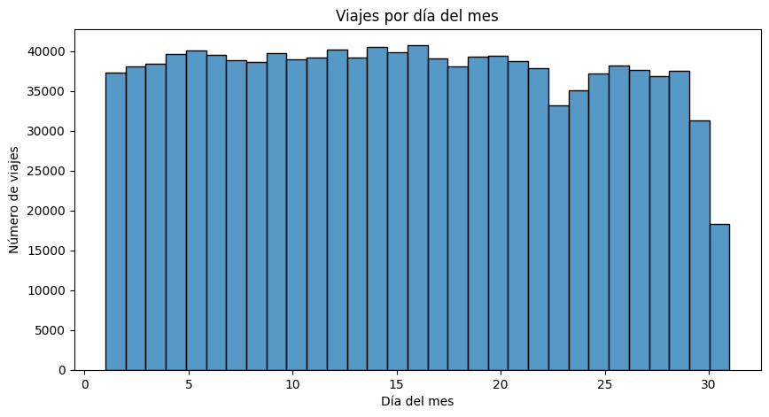
El gráfico muestra una distribución relativamente uniforme de viajes por día del mes, con pequeñas fluctuaciones. Se observa una caída en los últimos días, especialmente el 31, posiblemente debido a meses sin ese día en la muestra. La mayoría de los días mantienen un número estable de viajes, aunque podrían existir efectos estacionales si el dataset abarca varios meses.
#Grafico 2:Viajes por hora del dia.
plt.figure(figsize=(10, 5))
sns.histplot(train_df['hora_recogida'], bins=24, kde=False)
plt.xlabel('Hora del día')
plt.ylabel('Número de viajes')
plt.title('Viajes por hora del día')
plt.show()
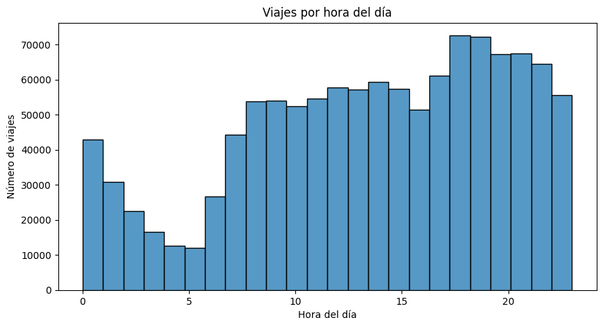
El gráfico muestra un alto número de viajes alrededor de la medianoche, seguido de una caída en la madrugada entre las 2 y 6 a.m., cuando la actividad es mínima. A partir de las 6 a.m., los viajes aumentan progresivamente, probablemente debido a desplazamientos matutinos. Se observa un segundo pico entre las 17 y 21 horas, lo que indica un incremento en la movilidad al final del día, posiblemente relacionado con la salida del trabajo y actividades recreativas.
#Grafico 3:Viajes por día de la semana.
plt.figure(figsize=(10, 5))
sns.histplot(train_df['dia_semana_recogida'], bins=7, kde=False)
plt.xlabel('Día de la semana')
plt.ylabel('Número de viajes')
plt.title('Viajes por día de la semana')
plt.show()
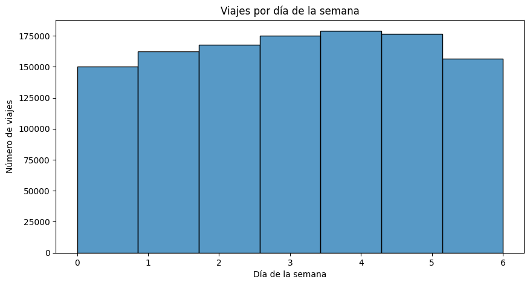
El gráfico muestra que la cantidad de viajes varía a lo largo de la semana. Se observa un incremento progresivo desde el inicio de la semana, alcanzando su punto máximo entre el miércoles y el viernes. Durante el sábado y el domingo, la cantidad de viajes disminuye, lo que puede indicar una menor demanda de transporte en comparación con los días laborales.
plt.figure(figsize=(22, 6))
# Passenger Count
plt.subplot(131)
sns.countplot(x=train_df['passenger_count'], order=train_df['passenger_count'].value_counts().index)
plt.xlabel('Passenger Count')
plt.ylabel('Frequency')
plt.title('Distribución de la Cantidad de Pasajeros')
plt.show()
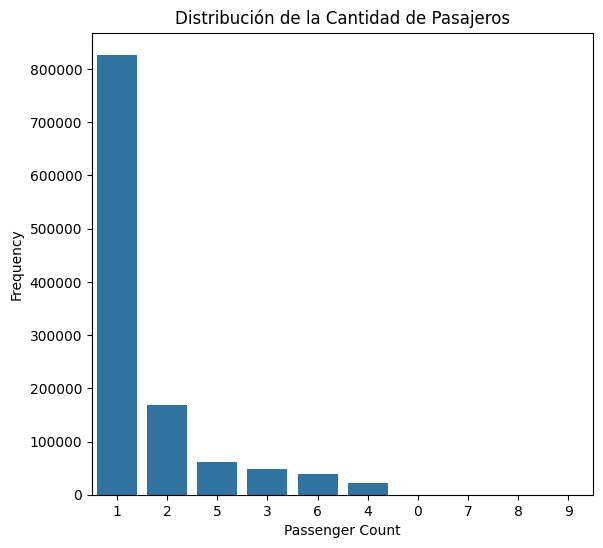
La mayoría de los viajes tienen un solo pasajero, lo que sugiere un uso predominante de taxis para transporte individual.
train_df['vendor_id'] = train_df['vendor_id'].astype(int) # Asegurar que es entero
plt.figure(figsize=(6, 4))
sns.countplot(y=train_df['vendor_id'], hue=train_df['vendor_id'], palette={1: "blue", 2: "orange"}, legend=False)
plt.xlabel('Frecuencia')
plt.ylabel('vendor_id')
plt.title('Distribución de vendor_id')
plt.show()
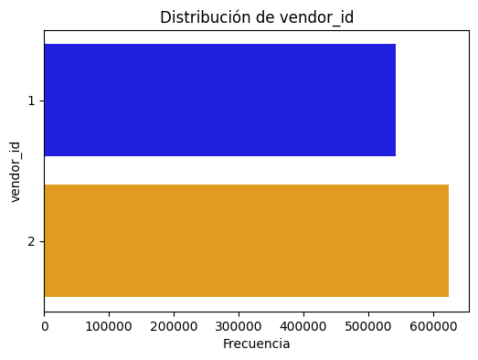
Se observa que hay dos proveedores de servicio (1 y 2), con una diferencia notable en la cantidad de viajes. El proveedor 2 tiene más registros que el proveedor 1, lo que sugiere que tiene una mayor participación en los datos analizados. Esta diferencia podría influir en el análisis, por lo que sería útil investigar si existen variaciones en la calidad o el comportamiento de los viajes según el proveedor.
import warnings
warnings.filterwarnings("ignore")
plt.figure(figsize=(6, 4))
sns.countplot(x=train_df['store_and_fwd_flag'], palette={"0": "blue", "1": "orange"})
plt.xlabel('store_and_fwd_flag')
plt.ylabel('Frecuencia')
plt.title('Distribución de store_and_fwd_flag')
plt.show()
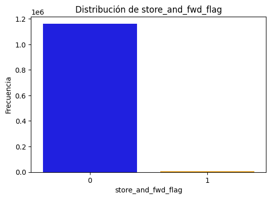
La gran mayoría de los viajes tienen un valor de 0 (o “N”), lo que significa que fueron transmitidos en tiempo real sin necesidad de almacenamiento previo.
#Analisis de nuestra variable respuesta
plt.figure(figsize=(8, 5))
sns.boxplot(x=np.log1p(df['trip_duration']))
plt.xlabel('Log Trip Duration')
plt.title('Boxplot de Trip Duration (Escala Log)')
plt.show()
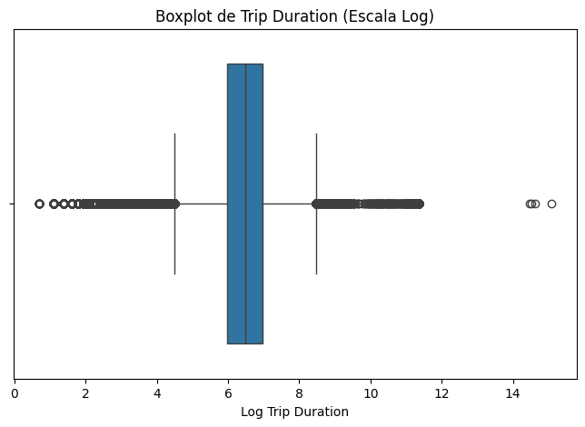
Se observan valores atípicos a ambos lados, lo que indica la presencia de viajes inusualmente cortos o largos. La mayor concentración de datos en el centro sugiere que la mayoría de las duraciones están dentro de un rango específico, lo que facilita su análisis.
#Getting the summary of the trip_duration dataset
df['trip_duration'].describe()/3600 # Trip duration in hours
count 405.178889
mean 0.266526
std 1.454842
min 0.000278
25% 0.110278
50% 0.183889
75% 0.298611
max 979.522778
Name: trip_duration, dtype: float64
La mayoría de los viajes duran menos de 20 minutos, con una mediana de 11 minutos. Sin embargo, hay valores atípicos extremos, como un viaje de más de 40 días, lo que genera una alta variabilidad en los datos. La desviación estándar es grande, indicando que las duraciones varían bastante.
# Aplicar la transformación logarítmica
train_df['log_trip_duration'] = np.log(train_df['trip_duration'].values + 1)
# Graficar el histograma
plt.figure(figsize=(8, 4))
sns.histplot(train_df['log_trip_duration'], bins=200, kde=False, color="blue")
# Etiquetas y título
plt.xlabel('Log de trip_duration')
plt.ylabel('Frecuencia')
plt.title('Distribución de trip_duration en escala logarítmica')
# Mostrar el gráfico
plt.show()
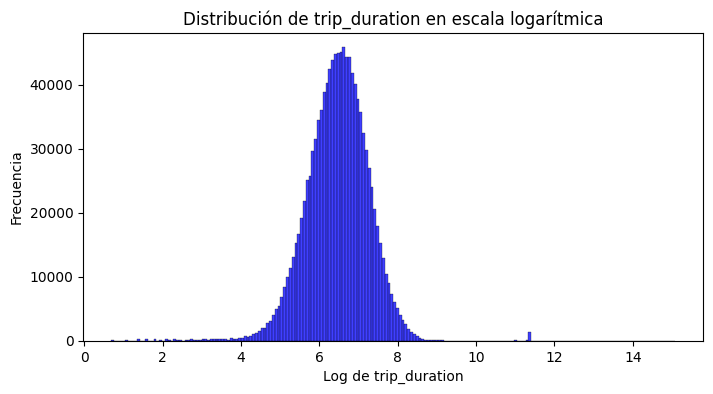
print(train_df[['trip_duration', 'log_trip_duration']].describe())
trip_duration log_trip_duration
count 1.166915e+06 1.166915e+06
mean 9.592736e+02 6.466707e+00
std 5.624981e+03 7.955469e-01
min 1.000000e+00 6.931472e-01
25% 3.970000e+02 5.986452e+00
50% 6.620000e+02 6.496775e+00
75% 1.075000e+03 6.981006e+00
max 3.526282e+06 1.507575e+01
La transformación logarítmica ha ayudado a reducir la dispersión de los datos y minimizar el impacto de valores atípicos extremadamente altos. Ahora, los datos de trip_duration tienen una distribución más simétrica y normalizada, lo cual es útil para modelos de Machine Learning, especialmente aquellos que suponen normalidad en los datos.
ANALISIS BIVARIADO
train_df.shape
(1166915, 19)
train_df.columns
Index(['id', 'vendor_id', 'pickup_datetime', 'dropoff_datetime',
'passenger_count', 'pickup_longitude', 'pickup_latitude',
'dropoff_longitude', 'dropoff_latitude', 'store_and_fwd_flag',
'trip_duration', 'check_trip_duration', 'dia_recogida', 'hora_recogida',
'dia_semana_recogida', 'dia_llegada', 'hora_llegada',
'dia_semana_llegada', 'log_trip_duration'],
dtype='object')
train_df_info=train_df.info()
<class 'pandas.core.frame.DataFrame'>
RangeIndex: 1166915 entries, 0 to 1166914
Data columns (total 19 columns):
# Column Non-Null Count Dtype
--- ------ -------------- -----
0 id 1166915 non-null object
1 vendor_id 1166915 non-null int64
2 pickup_datetime 1166915 non-null datetime64[ns]
3 dropoff_datetime 1166915 non-null datetime64[ns]
4 passenger_count 1166915 non-null int64
5 pickup_longitude 1166915 non-null float64
6 pickup_latitude 1166915 non-null float64
7 dropoff_longitude 1166915 non-null float64
8 dropoff_latitude 1166915 non-null float64
9 store_and_fwd_flag 1166915 non-null category
10 trip_duration 1166915 non-null int64
11 check_trip_duration 1166915 non-null float64
12 dia_recogida 1166915 non-null int32
13 hora_recogida 1166915 non-null int32
14 dia_semana_recogida 1166915 non-null int32
15 dia_llegada 1166915 non-null int32
16 hora_llegada 1166915 non-null int32
17 dia_semana_llegada 1166915 non-null int32
18 log_trip_duration 1166915 non-null float64
dtypes: category(1), datetime64[ns](2), float64(6), int32(6), int64(3), object(1)
memory usage: 134.7+ MB
df1 = train_df.drop(columns=['id', 'pickup_datetime', 'dropoff_datetime', 'pickup_longitude','pickup_latitude',
'dropoff_longitude','dropoff_latitude','trip_duration'])
# Verificando la correlación entre todas las características
plt.figure(figsize=(12, 6))
# Calculando la matriz de correlación con factorize para variables categóricas
corr = df1.apply(lambda x: pd.factorize(x)[0]).corr()
# Creando el heatmap con valores numéricos dentro
ax = sns.heatmap(corr,
xticklabels=corr.columns,
yticklabels=corr.columns,
linewidths=.2,
cmap="coolwarm", # Cambia la paleta de colores
annot=True, # Agrega los valores dentro de los cuadros
fmt=".2f") # Formato de los números (2 decimales)
plt.title("Matriz de Correlación") # Título del gráfico
plt.show()
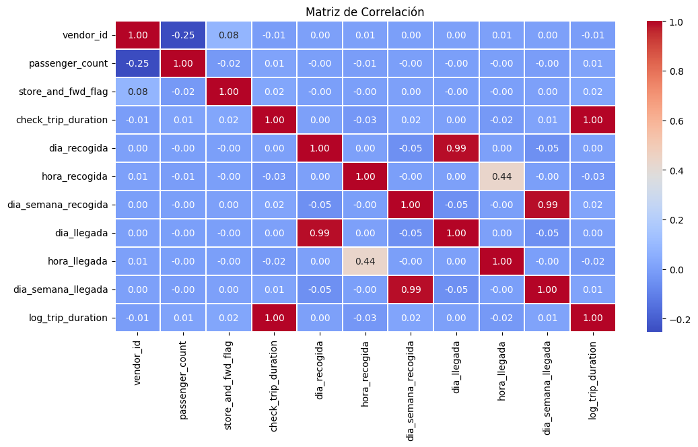
La matriz de correlación muestra las relaciones entre las variables del dataset, indicando qué tan fuertemente están asociadas entre sí. Se observa una alta correlación entre las variables relacionadas con el tiempo, como el día de recogida y día de llegada (0.99) y el día de la semana de recogida y llegada (0.99), lo cual es esperado, ya que la mayoría de los viajes ocurren dentro del mismo día. La hora de recogida y hora de llegada tienen una correlación moderada (0.44), lo que sugiere que la hora de inicio influye parcialmente en la hora de finalización, pero no de manera estrictamente lineal.
# Lista de características que parecen ser relevantes según la matriz de correlación
features = ['trip_duration', 'log_trip_duration', 'passenger_count',
'hora_recogida', 'dia_recogida', 'dia_semana_recogida']
plt.figure(figsize=(12, 10))
for i, feature in enumerate(features, 1):
plt.subplot(3, 2, i)
plt.hist(train_df[feature], bins=50, color='blue', alpha=0.7, edgecolor='black')
plt.xlabel(feature)
plt.ylabel('Frecuencia')
plt.title(f'Histograma de {feature}')
plt.tight_layout()
plt.show()
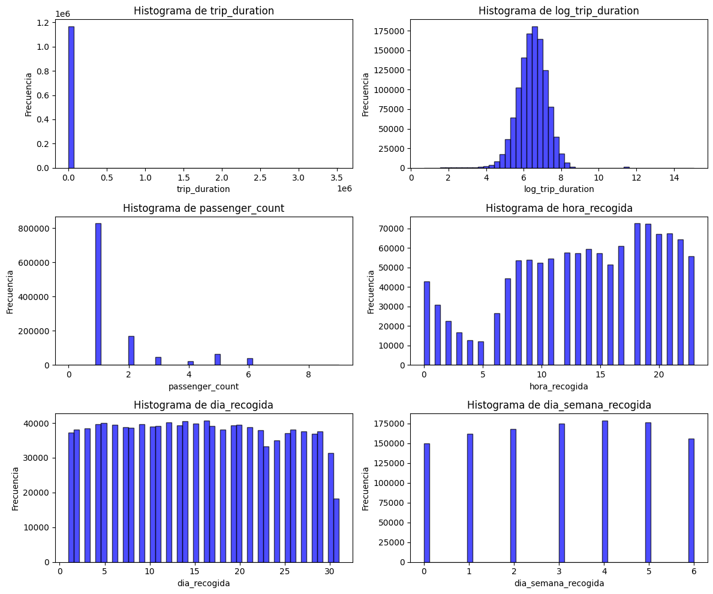
El análisis de los histogramas revela que la variable log_trip_duration, que es la versión transformada de la duración del viaje, sigue aproximadamente una distribución normal, lo cual es beneficioso para modelos estadísticos que asumen normalidad en la variable objetivo.
Latitud y longitud
# Filtrar solo viajes dentro de Nueva York
train_df = train_df.loc[(train_df.pickup_latitude > 40.6) & (train_df.pickup_latitude < 40.9)]
train_df = train_df.loc[(train_df.dropoff_latitude > 40.6) & (train_df.dropoff_latitude < 40.9)]
train_df = train_df.loc[(train_df.dropoff_longitude > -74.05) & (train_df.dropoff_longitude < -73.7)]
train_df = train_df.loc[(train_df.pickup_longitude > -74.05) & (train_df.pickup_longitude < -73.7)]
# Crear una copia del DataFrame filtrado
train_df_filtered = train_df.copy()
# Configuración de estilo para los gráficos
sns.set(style="white", palette="muted", color_codes=True)
# Crear subgráficos (2x2)
f, axes = plt.subplots(2, 2, figsize=(10, 10), sharex=False, sharey=False)
sns.despine(left=True)
# Histogramas de coordenadas
sns.histplot(train_df_filtered['pickup_latitude'].values, label='pickup_latitude', color="b", bins=100, ax=axes[0, 0])
sns.histplot(train_df_filtered['pickup_longitude'].values, label='pickup_longitude', color="r", bins=100, ax=axes[0, 1])
sns.histplot(train_df_filtered['dropoff_latitude'].values, label='dropoff_latitude', color="b", bins=100, ax=axes[1, 0])
sns.histplot(train_df_filtered['dropoff_longitude'].values, label='dropoff_longitude', color="r", bins=100, ax=axes[1, 1])
# Ajustes finales
plt.setp(axes, yticks=[])
plt.tight_layout()
plt.show()
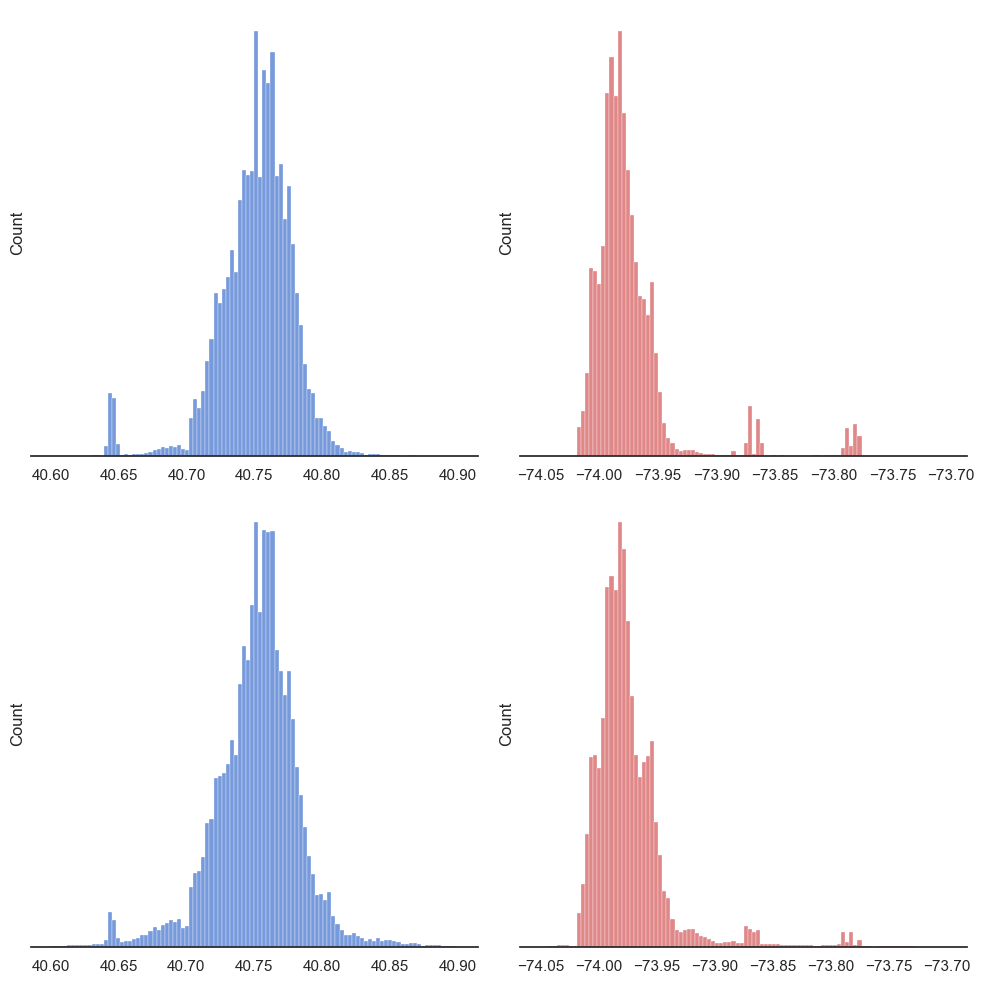
Se observan picos alrededor de 40.75° de latitud y -73.95° de longitud, lo que sugiere que la mayoría de los viajes inician y terminan en ubicaciones centrales de Nueva York, posiblemente en Manhattan.